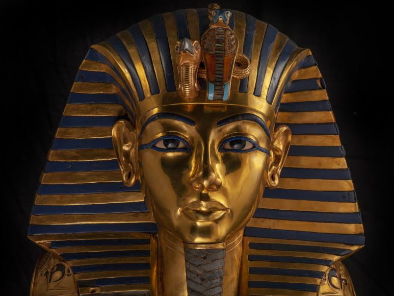

The Early Dynastic Period (c. 3150-c. 2613 BCE) saw the unification of the north and south kingdoms of Egypt under the king Menes ( also known as Meni or Manes) of Upper Egypt who conquered Lower Egypt in c. 3118 BCE or c. 3150 BCE. This version of the early history comes from the Aegyptica (History of Egypt) by the ancient historian Manetho who lived in the 3rd century BCE under the Ptolemaic Dynasty (323-30 BCE). Although his chronology has been disputed by later historians, it is still regularly consulted on dynastic succession and the early history of Egypt.
Manetho’s work is the only source which cites Menes and the conquest and it is now thought that the man referred to by Manetho as `Menes’ was the king Narmer who peacefully united Upper and Lower Egypt under one rule. Identification of Menes with Narmer is far from universally accepted, however, and Menes has been as credibly linked to the king Hor-Aha (c. 3100-3050 BCE)who succeeded him. An explanation for Menes' association with his predecessor and successor is that `Menes' is an honorific title meaning "he who endures" and not a personal name and so could have been used to refer to more than one king. The claim that the land was unified by military campaign is also disputed as the famous Narmer Palette, depicting a military victory, is considered by some scholars to be royal propaganda. The country may have first been united peacefully but this seems unlikely.
read more Egypt is a country in North Africa, on the Mediterranean Sea, and is home to one of the oldest civilizations on earth. The name 'Egypt' comes from the Greek Aegyptos which was the Greek pronunciation of the Egyptian name 'Hwt-Ka-Ptah' ("Mansion of the Spirit of Ptah"), originally the name of the city of Memphis. Memphis was the first capital of Egypt and a famous religious and trade centre; its high status is attested to by the Greeks alluding to the entire country by that name.
To the Egyptians themselves, their country was simply known as Kemet which means 'Black Land' so named for the rich, dark soil along the Nile River where the first settlements began. Later, the country was known as Misr which means 'country', a name still in use by Egyptians for their nation in the present day. Egypt thrived for thousands of years (from c. 8000 BCE to c. 30 BCE) as an independent nation whose culture was famous for great cultural advances in every area of human knowledge, from the arts to science to technology and religion. The great monuments which Egypt is still celebrated for reflect the depth and grandeur of Egyptian culture which influenced so many ancient civilizations, among them Greece and Rome.
read more